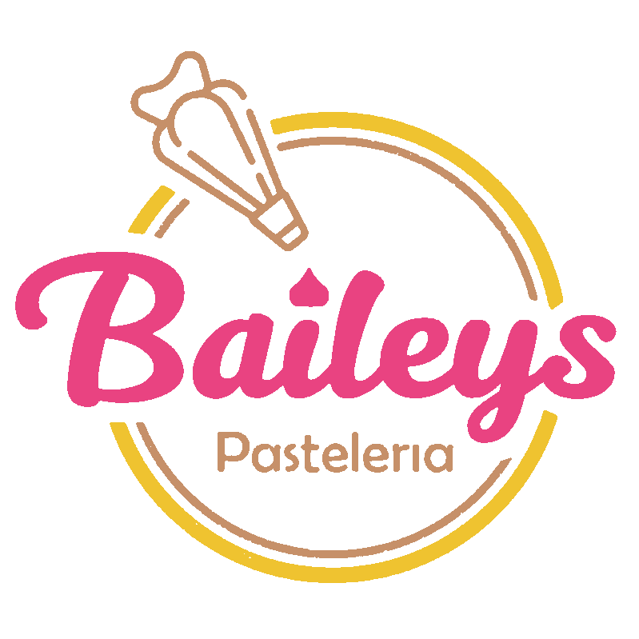
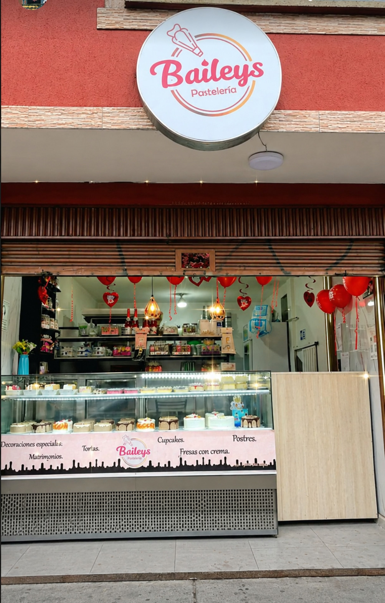
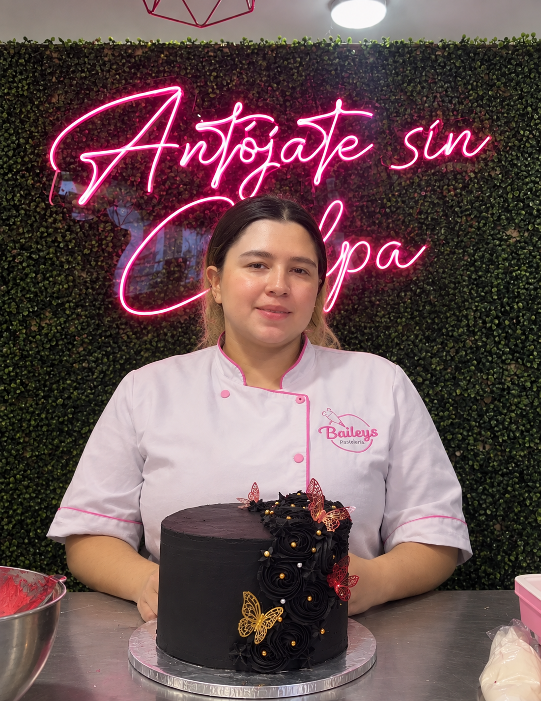
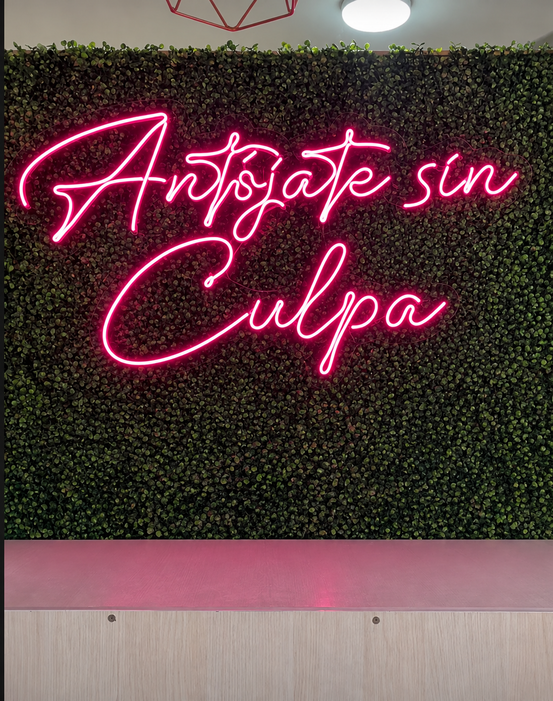
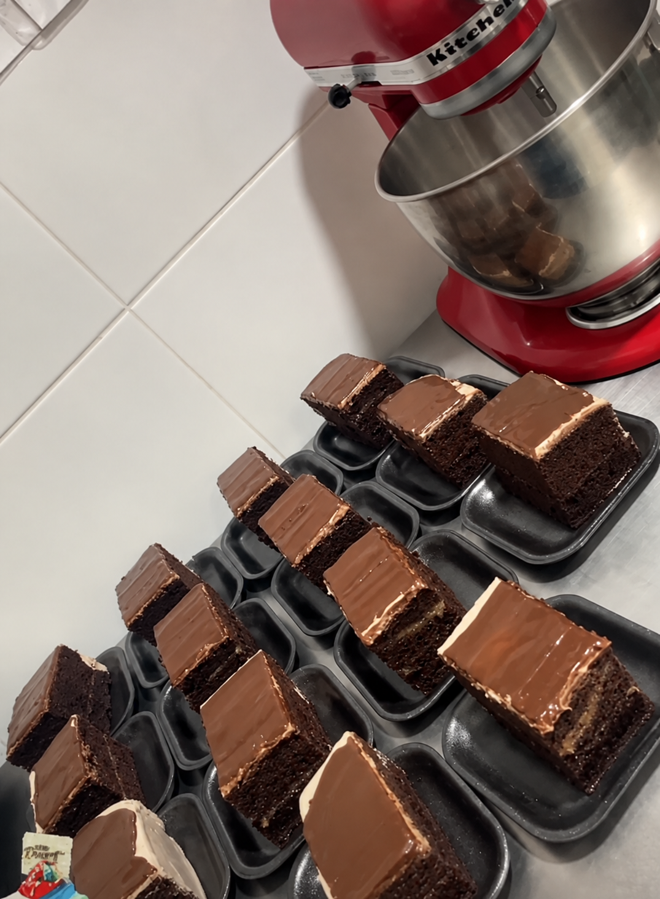
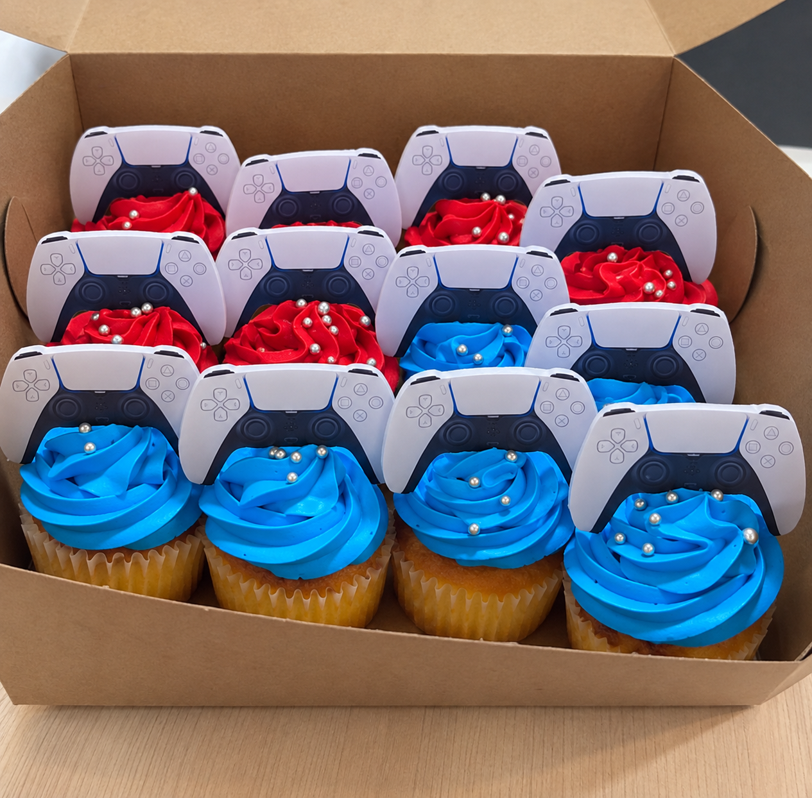
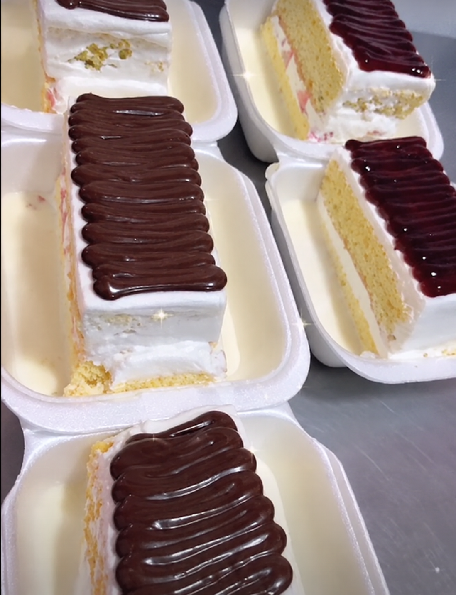
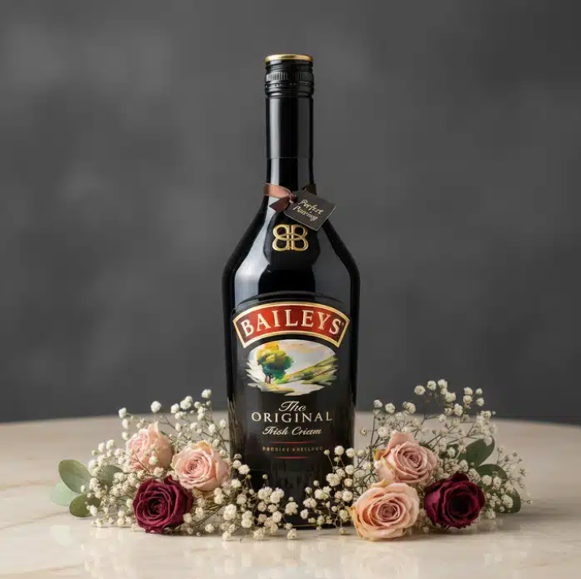
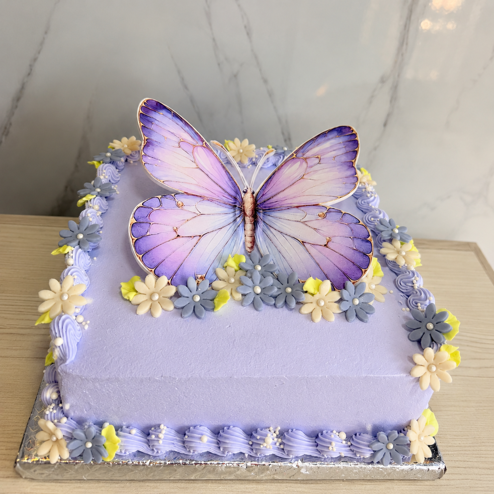
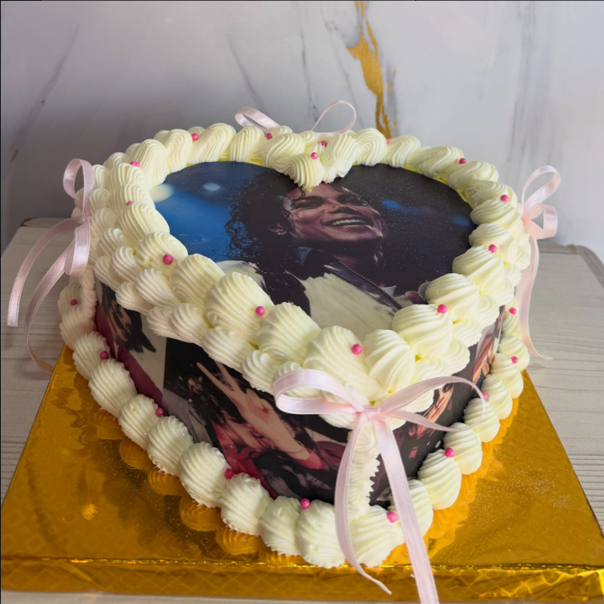

BIENVENIDOS A
Dulces momentos hechos con amor, creatividad y mucho sabor.
DESCUBRE NUESTROS PRODUCTOS
CONOCE NUESTROS

UNA TRADICION QUE SE CONVIRTIO EN PASION
Lo que hoy conocemos como Bailey’s nació de una idea que comenzó hace 4 años y que, hace 2 años, se convirtió en una realidad junto a su esposo.
Más que un negocio, la pastelería representa una tradición que ha pasado de generación en generación y que con el tiempo se ha convertido en una forma de compartir momentos especiales.
Con el paso de los años, la pastelería ha construido una identidad propia, reconocida por sus productos elaborados, su presentación y la dedicación que pone en cada detalle.
CONOCE NUESTRA HISTORIA
DESCUBRE NUESTRA ESENCIA EN MOVIMIENTO
Cada detalle tiene algo que contar, cada creación guarda una emoción y cada momento merece un toque dulce. Descubre la esencia de Bailey's a través de nuestra creatividad y pasión por la pastelería.
UNA HISTORIA CON SABOR

En Bailey’s creemos que la pastelería también puede ser una forma de compartir alegría. Somos un emprendimiento familiar a partir de una tradición y de la pasión por crear productos de calidad.
Con el paso del tiempo hemos crecido junto a nuestros clientes, acompañándolos en cumpleaños, celebraciones y momentos inolvidables.
Hoy seguimos trabajando para que cada creación Bailey's tenga algo especial.
CREATIVIDAD CON UN TOQUE DULCE
Cada detalle tiene su encanto.
En Bailey's, la pastelería es mucho más que preparar algo delicioso: es crear momentos, despertar emociones y convertir los pequeños detalles en recuerdos especiales.
A través de este video publicitario, compartimos la esencia de nuestra marca y mostramos que detrás de cada creación hay dedicación, creatividad y pasión.
Bailey's Pastelería · Un detalle que enamora.
UNA MIRADA A NUESTRO TRABAJO






CONOCE MÁS SOBRE NOSOTROS
Para la creacion de esta pagina web y nuestra estrategia digital, Nexo Agency fue una parte vital del proceso, aqui presentamos la entrevista de nuestro proceso, de como ahora innovamos nuetra marca.
VISÍTANOS
Calle 132 # 123A - 04
Villa María
Calle 129D # 121 - 45
Sombrillas, Suba